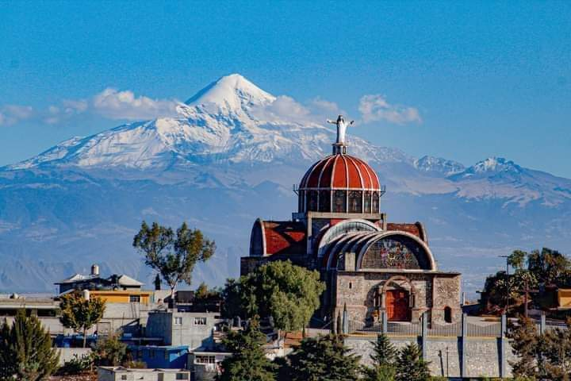

INICIO
MI TEQUEXQUITLA
TURISMO
ATRACCIONES
UBICACIÓN
Turismo Interactivo
VEN Y DESCUBRE
¿QUÉ ES TEQUEXQUITLA?
NÚMERO DE HABITANTES
ORIGEN DE TEQUEXQUITLA

EL CARMEN TEQUEXQUITLA
HISTORIA DE TEQUEXQUITLA